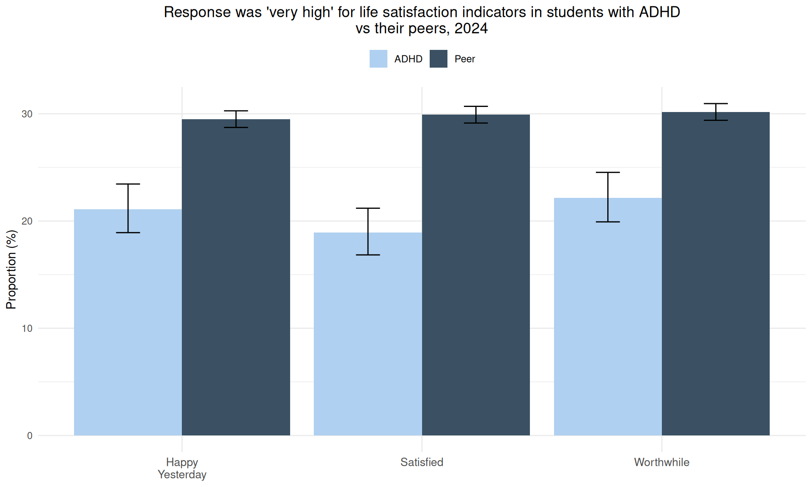
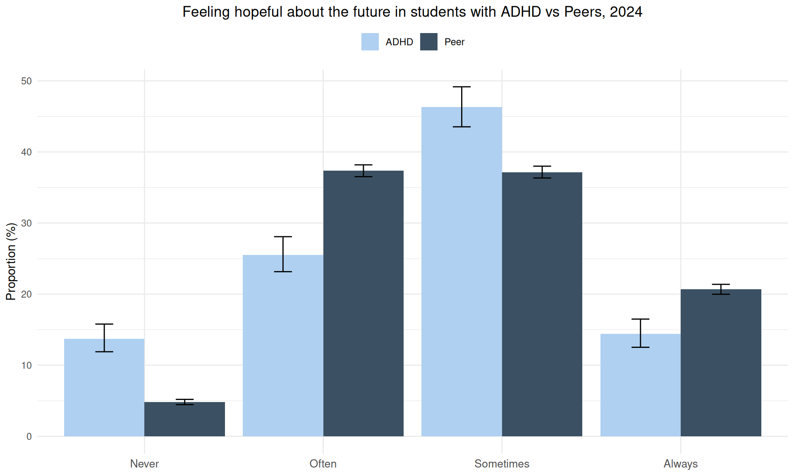
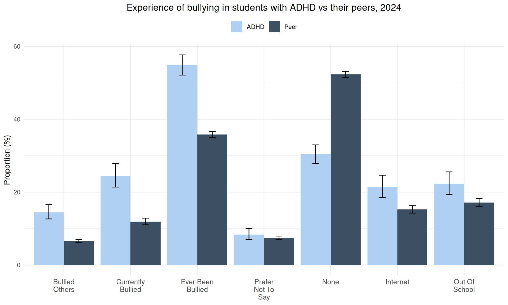
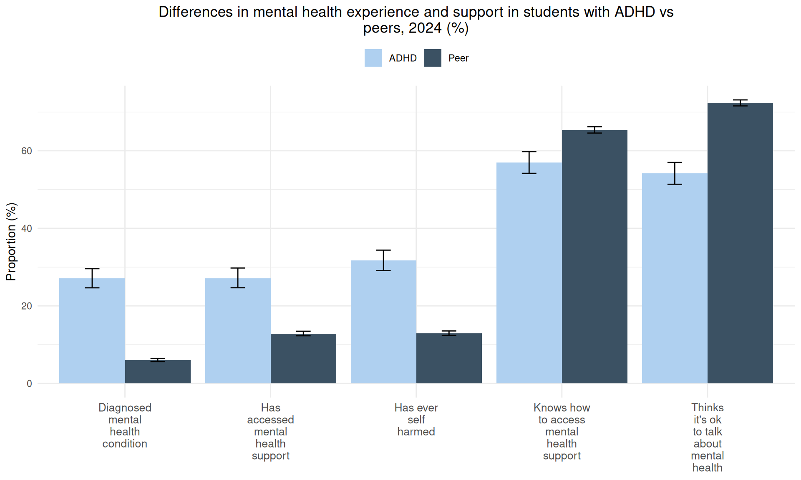
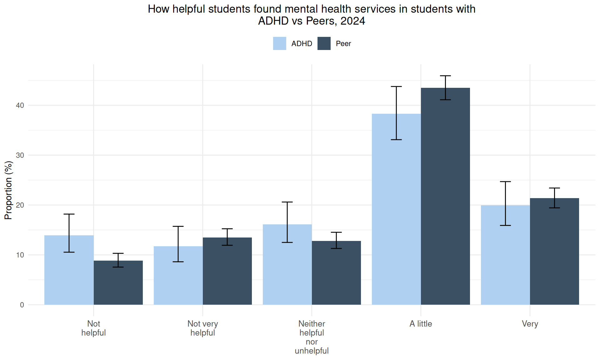
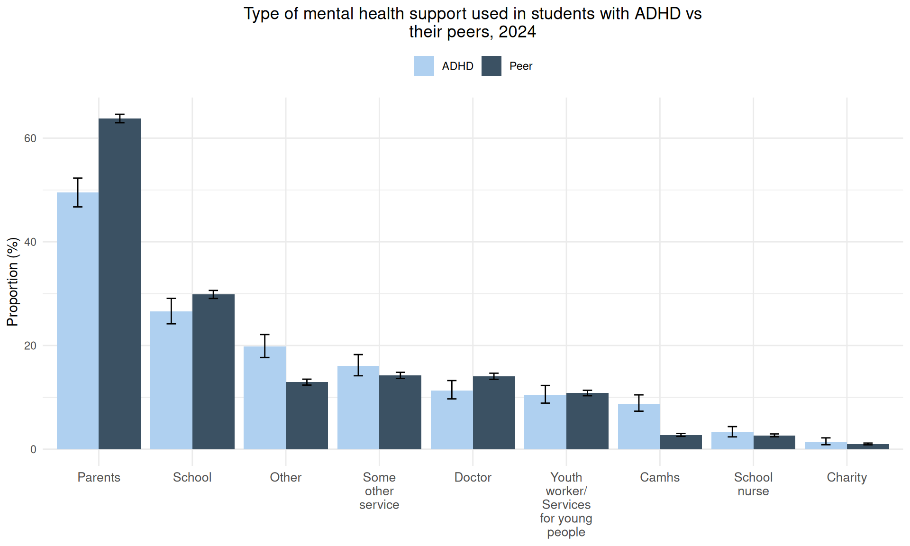
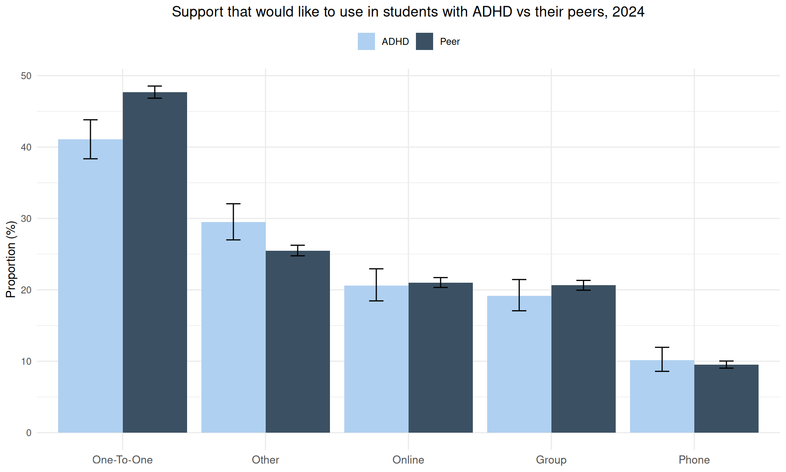
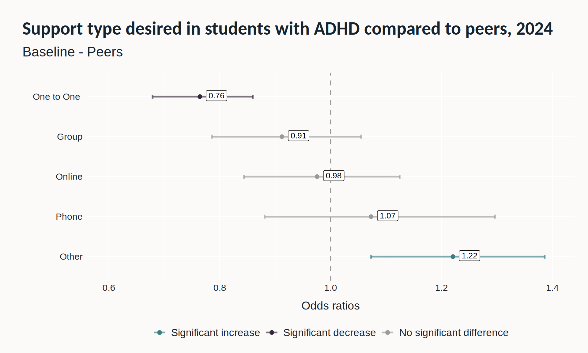
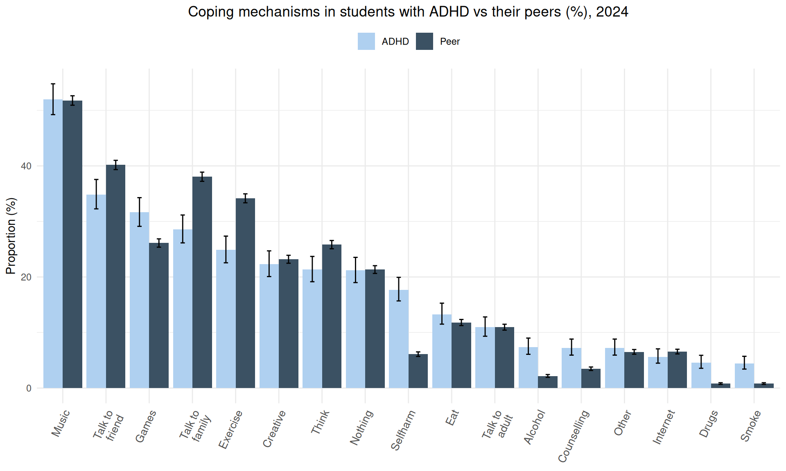
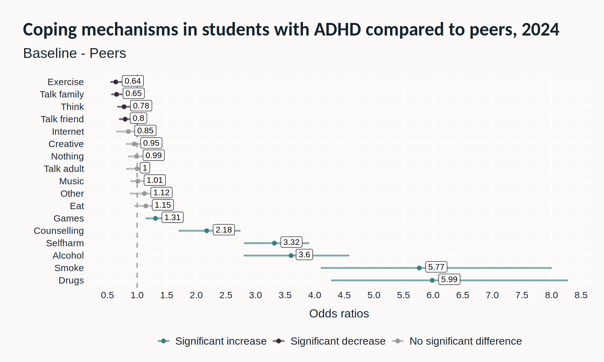

Gender | ADHD (n) | ADHD % (LCI-UCI) | Peers (n) | Peers % (LCI-UCI) |
|---|---|---|---|---|
Female | 502 | 40.42 (37.72-43.17) | 6,631 | 49.87 (49.02-50.72) |
Male | 614 | 49.44 (46.66-52.21) | 6,318 | 47.51 (46.67-48.36) |
Non-Binary | 35 | 2.82 (2.03-3.89) | 70 | 0.53 (0.42-0.66) |
Other | 18 | 1.45 (0.92-2.28) | 40 | 0.3 (0.22-0.41) |
Prefer not to say | 17 | 1.37 (0.86-2.18) | 92 | 0.69 (0.56-0.85) |
Transgender | 34 | 2.74 (1.97-3.8) | 81 | 0.61 (0.49-0.76) |
Unsure | 22 | 1.77 (1.17-2.67) | 65 | 0.49 (0.38-0.62) |
Key Messages
Findings from the latest Young People’s Health and Wellbeing Survey suggest that, in comparison to their peers, young people reporting ADHD in Hertfordshire also report:
Lower levels of happiness, life satisfaction and hopefulness about the future
Higher levels of self-harm and bullying
Higher rates of diagnosed mental health disorders
Lower knowledge about how to access mental health support
Higher use of substances and self-harm to cope
Higher use of counselling to cope
Greater dissatisfaction with mental health services
Higher desire for wanting ‘other’ forms of mental health support
Abstract
ADHD is a neurodevelopmental disorder where there is a persistent pattern of inattention (e.g., not being able to focus) and/or hyperactivity-impulsivity (e.g., excess movement or acting impulsively) that affects development or functioning (NIH, 2016). It may also be considered a type of neurodivergence (Royal College of Nursing, n.d.).
ADHD has been associated with several mental health problems including suicide, self-harm, mood disorders, substance addiction, eating disorders and anxiety disorders (French et al., 2024). Despite this, the recently published Mental Health in Children and Young People Joint Strategic Needs Assessment identified that there was a lack of local data on the mental health needs of those with ADHD in Hertfordshire. Therefore, this report aims to compare differences in mental health between local students with ADHD and their peers. This will help to identify the needs of students with ADHD in Hertfordshire.
About the data
- This analysis uses data from the Young People’s Health & Wellbeing Survey. This is a youth health and wellbeing survey which gathers self-reported information annually from those aged 11-19 in Hertfordshire.
Method
- Through the Young People’s Health and Wellbeing Survey (2024), pupils were asked various questions about their mental health and whether they had ADHD. Based on responses to these questions, pupils were categorised as those who had ADHD and those who did not have ADHD (peers) and then responses relating to mental health were compared. Any differences noted in this report are statistically significant.
- See Tip 1 for more detail on understanding statistical significance.
Tip 1: Statistical significance in more detail
- Statistical significance: A term used to indicate whether a difference really exists between two or more data points or whether the difference is just by chance.
- For the analysis on coping mechanisms and type of support desired, a logistic regression was performed. This is a form of regression analysis where the response variable is binary (i.e. Yes/No). From the logistic regression, it can be determined which factors have an effect on the outcome of the response variable. The estimate of association reported here is the Odds Ratio (OR).
- See Tip 2 for more detail on interpreting plots in this post.
Tip 2: How to use plots in this report
- The bar plots compare the responses to mental health questions between students with ADHD and their peer group.
- The error bars on the plots indicate the lower confidence interval and upper confidence interval for each proportion.
- These confidence intervals provide an easy way to look for statistically significant differences between students with ADHD and their peers. If the confidence intervals do not overlap, there is a significant difference between students with ADHD and their peers. On the other hand, if the intervals overlap, then the differences between students are not statistically significant.
- In contrast, the Odds Ratio plots compare the differences in the likelihood of the students responding with a certain answer. This uses a more accurate statistical test than those used in the bar plots.
Results
Demographics
- In the survey, there were 1,242 students who reported that they had ADHD. 13,297 students were in the peer group.
A lower proportion of students who reported having ADHD answered female compared to their peers. In contrast, a higher proportion of students who reported having ADHD answered non-binary, other, prefer not to say, transgender and unsure compared to their peers.
A higher proportion of students reporting they had ADHD answered that their sexuality was bisexual, lesbian, other, prefer not to say and questioning compared to their peers.
Sexuality | ADHD (n) | ADHD % (LCI-UCI) | Peers (n) | Peers % (LCI-UCI) |
|---|---|---|---|---|
Bisexual | 102 | 8.31 (6.9-9.99) | 562 | 4.28 (3.95-4.64) |
Heterosexual/Straight | 880 | 71.72 (69.13-74.17) | 11,082 | 84.37 (83.74-84.98) |
Homosexual/Gay Male | 12 | 0.98 (0.56-1.7) | 72 | 0.55 (0.44-0.69) |
Homosexual/Lesbian | 56 | 4.56 (3.53-5.88) | 174 | 1.32 (1.14-1.53) |
Other | 40 | 3.26 (2.4-4.41) | 153 | 1.16 (1-1.36) |
Prefer not to say | 57 | 4.65 (3.6-5.97) | 398 | 3.03 (2.75-3.34) |
Questioning | 35 | 2.85 (2.06-3.94) | 170 | 1.29 (1.11-1.5) |
Unsure | 45 | 3.67 (2.75-4.87) | 524 | 3.99 (3.67-4.34) |
A higher proportion of students with ADHD were White compared to their peers (74.1% compared to 66.1%). A lower proportion of those with ADHD were Asian compared to their peers (6.6% and 16.7%).
Ethnicity | ADHD (n) | ADHD % (LCI-UCI) | Peers (n) | Peers % (LCI-UCI) |
|---|---|---|---|---|
Asian | 79 | 6.58 (5.31-8.12) | 2,153 | 16.72 (16.09-17.38) |
Black | 50 | 4.16 (3.17-5.45) | 547 | 4.25 (3.91-4.61) |
Mixed | 136 | 11.32 (9.65-13.24) | 1,290 | 10.02 (9.51-10.55) |
Unknown | 46 | 3.83 (2.88-5.07) | 381 | 2.96 (2.68-3.27) |
White | 890 | 74.1 (71.55-76.5) | 8,504 | 66.05 (65.23-66.86) |
Mental health and wellbeing
Students were asked various questions about happiness and life satisfaction and asked to rate these measures as low, medium, high or very high. A comparison of ‘very high’ responses is given below.
A lower proportion of students reporting they had ADHD rated the following measures as ‘very high’ compared to their peers:
Happiness yesterday (21.1% compared to 29.5%)
Life satisfaction (18.9% compared to 29.9%)
Feelings of life being worthwhile (22.1% compared to 30.2%)

- A higher proportion of students disclosing that they had ADHD reported never feeling hopeful about the future compared to their peers (13.7% and 4.8% respectively).

A higher proportion of students reporting ADHD answered ‘yes’ to having ever been bullied (54.9%), being currently bullied (24.5%), or bullying others (14.5%) compared to their peers (35.8%, 11.9% and 6.6% respectively).
Additionally, a higher proportion of students reporting ADHD responded ‘yes’ to having been bullied on the internet (21.4%) or out of school (22.3%) compared to their peers (15.2% and 17.1% respectively).

A higher proportion of students reporting ADHD responded ‘yes’ to having a diagnosed mental health condition (27.1%), accessing mental health support (27.1%) and having ever self harmed (31.7%) compared to their peers (6%, 12.9% and 12.9% respectively).
In contrast, a lower proportion of students reporting ADHD responded ‘yes’ to knowing how to access mental health support (57%) and thinking it was ok to talk about mental health (54.2%) compared to their peers (65.4% and 72.4% respectively).

Mental health support and managing mental health
- A higher proportion of students reporting ADHD found mental health services not helpful (13.9%) compared to their peers (8.8%).

- A lower proportion of students reporting ADHD said they that they used parents (49.5%) and school (26.6%) as mental health support compared to their peers (63.8% and 29.8% respectively). In contrast, a higher proportion of students reporting ADHD said they used other support (19.8%) and CAMHS for Young People (8.8%) than their peers (12.9% and 2.7% respectively). Students reporting ADHD may have higher use of CAMHS due to having an official diagnosis of ADHD meaning they are offered this type of support. In contrast, peers without ADHD may reach a high needs level before being referred to CAMHS.

- When asked what type of mental health support they would like to use, a lower proportion of students reporting ADHD said one-to-one (41.1%) and a higher proportion said ‘other’ (29.5%) compared to their peers (47.7% and 25.5% respectively).

- Although one-to-one support was the most popular type of support wanted by students reporting ADHD, the odds of wanting this support was 24% lower than their peers (OR = 0.76). In contrast, the odds of students reporting ADHD wanting ‘Other’ support was 1.2 times higher compared to their peers.

- See Tip 3 for more detail on interpreting the logistic regression plots in this post.
Tip 3: Odds ratios in more detail
To understand logistic regression, a description of the logistic regression for coping mechanisms is described below:
To perform the logistic regression, a reference group is chosen. In the logistic regressions here, those with ADHD are compared to their peers.
The odds of using a coping mechanism for each group is then calculated. For example, if 1 out of every 10 people in the peer group uses drugs as a coping mechanism, their odds of using this coping mechanism is 1 out of 10. If 3 out of every 10 people with ADHD use drugs as a coping mechanism, their odds of using this coping mechanism is 3 out of 10.
The “odds ratio” compares the two odds. To calculate the odds ratio of people with ADHD using drugs as a coping mechanism compared to their peers,3 would be divided by 1, which is 3. This means that those with ADHD would be three times more likely to use drugs as a coping mechanism compared to their peers. Sometimes this is expressed as having “three times the odds of”.
The plot shows these odds ratios with confidence intervals. If the confidence intervals for each group overlaps the dotted line, that means they are not statistically significantly different from the reference group, and both groups have the same chance of having that experience or outcome. If the confidence intervals do not overlap, then they are statistically significantly different.
Coping mechanisms
- The most popular type of coping mechanism for students reporting ADHD and their peers was music, followed by talking with friends. In contrast, the least common coping mechanism in both groups were drugs and smoking.

The odds of using substances to cope was higher in those reporting ADHD compared to their peers:
Drugs (6 times higher)
Smoking (5.8 times higher)
Alcohol (3.6 times higher)
Additionally, the odds of using self-harm to cope was 3.3 times higher in students reporting ADHD compared to their peers.
Students reporting ADHD also had lower odds of using talking to friends and family, thinking, and exercising as coping mechanisms compared to their peers.
Importantly, the odds of students reporting ADHD using counselling to cope were 2.2 times higher than in their peers. This may suggest that counselling is particularly useful to promote to students with ADHD.

Conclusion and recommendations
Students who reported having ADHD often experience poorer mental health outcomes and more challenges accessing support compared to their peers.
- Wellbeing: These students reported lower levels of happiness, life satisfaction, and feelings that their lives are worthwhile. Furthermore, they had higher rates of diagnosed mental health conditions compared to their peers. Further research into the underlying causes could help inform targeted interventions to improve wellbeing in this group.
Self-harm and Stigma: Rates of self-harm were higher among students reporting ADHD. However, fewer of these students knew how to access mental health support or felt it was acceptable to talk about mental health. This suggests that stigma and lack of awareness may be significant barriers to accessing help. Addressing these issues is crucial, especially given the increased odds of using self-harm and substances to cope. These findings indicate that students reporting ADHD may be more likely to engage in harmful coping strategies when appropriate support is lacking:
- Self-harm: 3.3 times higher
- Drugs: 6 times higher
- Smoking: 5.8 times higher
- Alcohol: 3.6 times higher
Counselling Use: Positively, students reporting ADHD had higher odds of using counselling services to cope (2.2 times higher), showing that some are accessing support.
Perceptions of Support: Despite this, a higher proportion of students reporting ADHD found mental health support to be not helpful compared to their peers. While one-to-one support was the most commonly desired option, the odds of wanting this type of support were 24% lower among students with ADHD (OR = 0.76). In contrast, the odds of wanting ‘other’ types of support were 1.2 times higher.
These findings suggest that traditional support options may not fully meet the needs of students with ADHD. Exploring and introducing alternative forms of mental health support could be beneficial, especially given the higher interest in non-standard support options among this group.
References
French, B., Nalbant, G., Wright, H., Sayal, K., Daley, D., Groom, M. J., Cassidy, S., & Hall, C. L. (2024). The impacts associated with having ADHD: An umbrella review. Frontiers in Psychiatry, 15, 1343314. https://doi.org/10.3389/fpsyt.2024.1343314
NIH. (2016, June). Table 7, DSM-IV to DSM-5 attention-deficit/hyperactivity disorder comparison. https://www.ncbi.nlm.nih.gov/books/NBK519712/table/ch3.t3/
Royal College of Nursing. (n.d.). What is neurodiversity? Neurodiversity RCN peer support service royal college of nursing. The royal college of nursing. Retrieved September 11, 2025, from https://www.rcn.org.uk/Get-Help/Member-support-services/Peer-support-services/Neurodiversity-Guidance/What-is-Neurodiversity